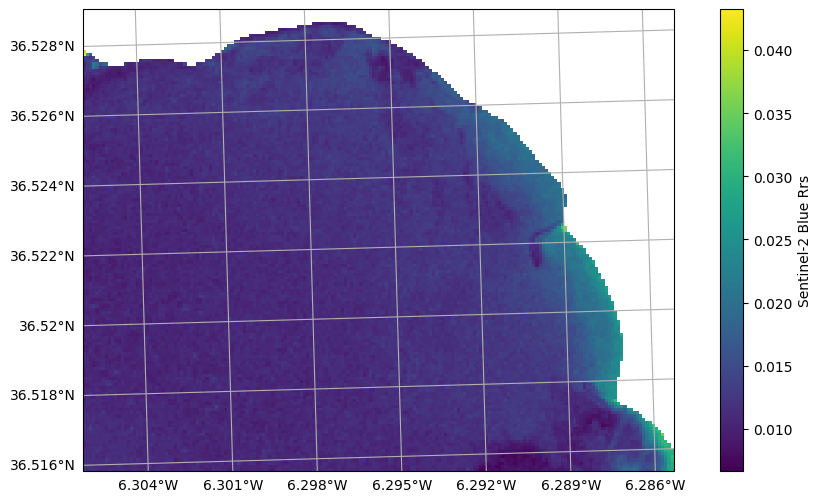
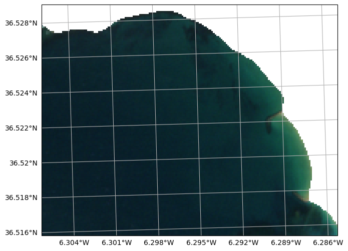
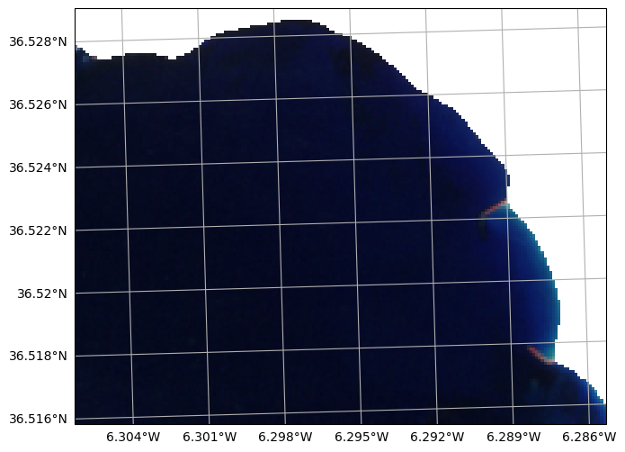

Reading NetCDF files
[26]:
import sys
import numpy as np
import matplotlib.pyplot as plt
sys.path.append(r'C:\Users\sergi\Documents\repos\geopy\geopy')
import reader
import image
import plot
Load the file
[18]:
raster : image.Image = reader.open(r'C:\Users\sergi\Documents\repos\geopy\tests\files\20241226.nc')
raster
[18]:
<xarray.Dataset> Size: 4MB
Dimensions: (y: 147, x: 188)
Coordinates:
transverse_mercator (y, x) float64 221kB ...
lon (y, x) float64 221kB ...
lat (y, x) float64 221kB ...
* x (x) float64 2kB 7.412e+05 7.412e+05 ... 7.431e+05
* y (y) float64 1kB 4.046e+06 4.046e+06 ... 4.045e+06
Data variables: (12/31)
Rrs_B1 (y, x) float32 111kB ...
Rrs_B2 (y, x) float32 111kB ...
Rrs_B3 (y, x) float32 111kB ...
Rrs_B4 (y, x) float32 111kB ...
Rrs_B5 (y, x) float32 111kB ...
Rrs_B6 (y, x) float32 111kB ...
... ...
ndci (y, x) float32 111kB ...
fai (y, x) float32 111kB ...
fait (y, x) float32 111kB ...
ndwi (y, x) float32 111kB ...
pSDB Green (y, x) float32 111kB ...
pSDB Red (y, x) float32 111kB ...
Attributes: (12/383)
generated_by: ACOLITE
generated_on: 2024-12-26 15:39:33 Hora están...
contact: Quinten Vanhellemont
product_type: NetCDF
metadata_profile: beam
metadata_version: 0.5
... ...
EARTHDATA_u: icman
EARTHDATA_p: Icman_2022
runid: 20241226_153834
inputfile: D:\NRT-Sentinel2\outputs\raw\S...
grid_mapping: transverse_mercator
crs_wkt: PROJCRS["unknown",BASEGEOGCRS[...Some properties
[19]:
raster.width
[19]:
188
[20]:
raster.height
[20]:
147
[21]:
raster.band_names
[21]:
['Rrs_B1',
'Rrs_B2',
'Rrs_B3',
'Rrs_B4',
'Rrs_B5',
'Rrs_B6',
'Rrs_B7',
'Rrs_B8',
'Rrs_B8A',
'Rrs_B11',
'Rrs_B12',
'l2_flags',
'SPM_Nechad2016_B4',
'SPM_Nechad2016_B5',
'SPM_Nechad2016_B6',
'TUR_Nechad2016_B4',
'TUR_Nechad2016_B5',
'TUR_Nechad2016_B6',
'chl_oc2',
'chl_oc3',
'chl_re_gons',
'chl_re_gonsB6',
'chl_re_mishra',
'chl_re_moses3b',
'chl_re_moses3bB6',
'ndci',
'fai',
'fait',
'ndwi',
'pSDB Green',
'pSDB Red']
[22]:
raster.transform
[22]:
Affine(10.0, 0.0, 741210.0,
0.0, -10.0, 4046010.0)
[23]:
raster.crs
[23]:
<Projected CRS: PROJCRS["unknown",BASEGEOGCRS["unknown",DATUM["Wor ...>
Name: unknown
Axis Info [cartesian]:
- E[east]: Easting (metre)
- N[north]: Northing (metre)
Area of Use:
- undefined
Coordinate Operation:
- name: UTM zone 29N
- method: Transverse Mercator
Datum: World Geodetic System 1984
- Ellipsoid: WGS 84
- Prime Meridian: Greenwich
Raster operations
Reduce the dimensions
[25]:
raster.resample(scale = 2, downscale = True)
raster.transform
[25]:
Affine(20.0, 0.0, 741210.0,
0.0, -20.0, 4046010.0)
Change de CRS
[27]:
import cartopy
import cartopy.crs
raster.reproject(cartopy.crs.Mercator())
raster.transform
[27]:
Affine(24.55673212883994, 0.0, -702003.5321638208,
0.0, -24.55673212837428, 4348219.503302906)
Plots
Reload the image to undo the resampling
[34]:
raster : image.Image = reader.open(r'C:\Users\sergi\Documents\repos\geopy\tests\files\20241226.nc')
Single Band
[35]:
fig, ax = plot.get_geofigure(raster, 1, 1)
ax, mappable = plot.plot_band(raster, 'Rrs_B2', ax = ax)
ax = plot.add_gridlines(ax)
fig.colorbar(mappable, label = 'Sentinel-2 Blue Rrs')
c:\Users\sergi\Documents\repos\geopy\.venv\Lib\site-packages\pyproj\crs\crs.py:1295: UserWarning: You will likely lose important projection information when converting to a PROJ string from another format. See: https://proj.org/faq.html#what-is-the-best-format-for-describing-coordinate-reference-systems
proj = self._crs.to_proj4(version=version)
[35]:
<matplotlib.colorbar.Colorbar at 0x1dec56644d0>

RGB
[36]:
fig, ax = plot.get_geofigure(raster, 1, 1)
ax = plot.plot_rgb(raster, 'Rrs_B4', 'Rrs_B3', 'Rrs_B2', ax = ax, brightness = 15)
ax = plot.add_gridlines(ax)
fig.colorbar(mappable, label = 'Sentinel-2 Blue Rrs')
c:\Users\sergi\Documents\repos\geopy\.venv\Lib\site-packages\pyproj\crs\crs.py:1295: UserWarning: You will likely lose important projection information when converting to a PROJ string from another format. See: https://proj.org/faq.html#what-is-the-best-format-for-describing-coordinate-reference-systems
proj = self._crs.to_proj4(version=version)
C:\Users\sergi\AppData\Local\Temp\ipykernel_12596\2444671046.py:5: UserWarning: Adding colorbar to a different Figure <Figure size 1200x600 with 3 Axes> than <Figure size 1200x600 with 1 Axes> which fig.colorbar is called on.
fig.colorbar(mappable, label = 'Sentinel-2 Blue Rrs')
[36]:
<matplotlib.colorbar.Colorbar at 0x1dec576b2d0>

False composite
[45]:
fig, ax = plot.get_geofigure(raster, 1, 1)
ax = plot.plot_rgb(raster, 'Rrs_B8', 'Rrs_B4', 'Rrs_B3', ax = ax, brightness = 15)
ax = plot.add_gridlines(ax)
fig.colorbar(mappable, label = 'Sentinel-2 Blue Rrs')
c:\Users\sergi\Documents\repos\geopy\.venv\Lib\site-packages\pyproj\crs\crs.py:1295: UserWarning: You will likely lose important projection information when converting to a PROJ string from another format. See: https://proj.org/faq.html#what-is-the-best-format-for-describing-coordinate-reference-systems
proj = self._crs.to_proj4(version=version)
C:\Users\sergi\AppData\Local\Temp\ipykernel_12596\181747281.py:5: UserWarning: Adding colorbar to a different Figure <Figure size 1200x600 with 12 Axes> than <Figure size 1200x600 with 1 Axes> which fig.colorbar is called on.
fig.colorbar(mappable, label = 'Sentinel-2 Blue Rrs')
[45]:
<matplotlib.colorbar.Colorbar at 0x1dec84b26d0>
